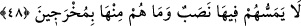

Ya da âhirette olur. Bu da nâkıslara mahsusdur. Allah bizi de sizi de arınmış kullarından
eylesin.
“Onlar artık köşkler üzerinde karşı karşıya oturan kardeşler olacaklar.” Kâşifî der
ki: Öyle bir halde cennete girerler ki muhabbet ve dostlukta birbirlerinin kardeşi
olurlar.
Allah Teâlâ, bu âyette öteki sûredekinden (bk. el-A‘râf, 7/43) fazla olarak ‘kardeş’
ifâdesine yer vermiştir. Çünkü bu âyet Hz. Peygamber (s.a.)’in ashâbı hakkında nâzil
olmuşken, öteki âyet bütün mü’minleri içine alan bir ifâdedir.
Fakir (Bursevî) der ki: Bunlar arınmışlık üzere kardeş olduklarına göre artık ne
dünyâda ilim ve mârifet hususunda, ne de âhirette cennet dereceleri ve Allah’a yakınlık
mertebeleri konusunda aralarında bir kıskançlık baş gösterir. Artık çeşitli
mücevherlerle süslü tahtlar üzerinde karşılıklı olarak, yâni birbirlerinin enselerini değil
de yüzlerini görecek şekilde kardeş kardeş otururlar.
Mücâhid der ki: Bu tahtlar onları, bütün hâl ve hareketlerinde yüz yüze olmak şartıyla
diledikleri yere götürecektir. Bu da dünyâdaki arınmışlıklarının sonuçlarından biridir.
48.
Onlara
orada
hiçbir
yorgunluk
gelmeyecek
ve
onlar
oradan
çıkarılmayacaklardır.
“Onlara orada” cennette “hiçbir yorgunluk” zahmet, meşakkat; onlardan bir şey bile
“gelmeyecek” Çünkü orası nîmetlere erişme ve rahatlık sarayıdır. el-İrşâd’da der ki:
Onlar için yorgunluk olmayacak. Kendileri için zorunlu olan şeyleri elde ederken
sıkılmalarını gerektirecek bir yorgunluk duymayacaklar. Çünkü bütün istekleri, hiçbir
amele teşebbüs etmeden hemen oluverecek. Ya da son derece kuvvetli olduklarından
dolayı zor hareketlere girişseler bile bu onlara yorgunluk vermeyecek.
“Ve onlar oradan çıkarılmayacaklardır.” Ebediyyen orada kalacaklar. Çünkü nîmet,
ancak sürekli olduğunda tam olmuş olur.
et-Te’vîlâtü’n-Necmiyye’de şöyle denilir: “Onlara orada hiçbir yorgunluk”
birbirlerinin derecelerine hased etme yorgunluğu “gelmeyecek” Çünkü bütün derece
sâhipleri, kendi derecelerinde kalacaklardır. Onların altlarındaki yahut üstlerindeki bir
dereceye geçmelerine imkân yoktur. Hased kini kalblerinden sökülüp alındığı için
herkes kendi derecesine râzı olacaktır.”
Pâk ve saf olup tabîat kuyusundan dışarı çık,
Çünkü toprağa bulaşan su bir safâ vermez.
Bir hadiste şöyle buyrulmuştur: “Cennete girecek ilk zümrenin sûreti, dolunay olan
gecedeki ayın sûretinde olacak. Onlar orada tükürmez, sümkürmez, küçük ve büyük